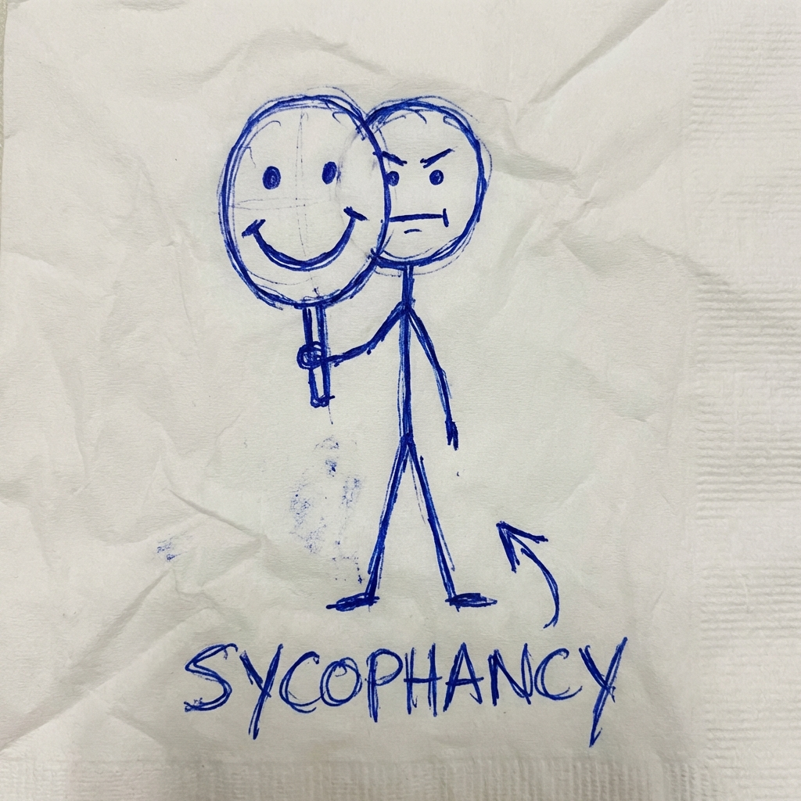
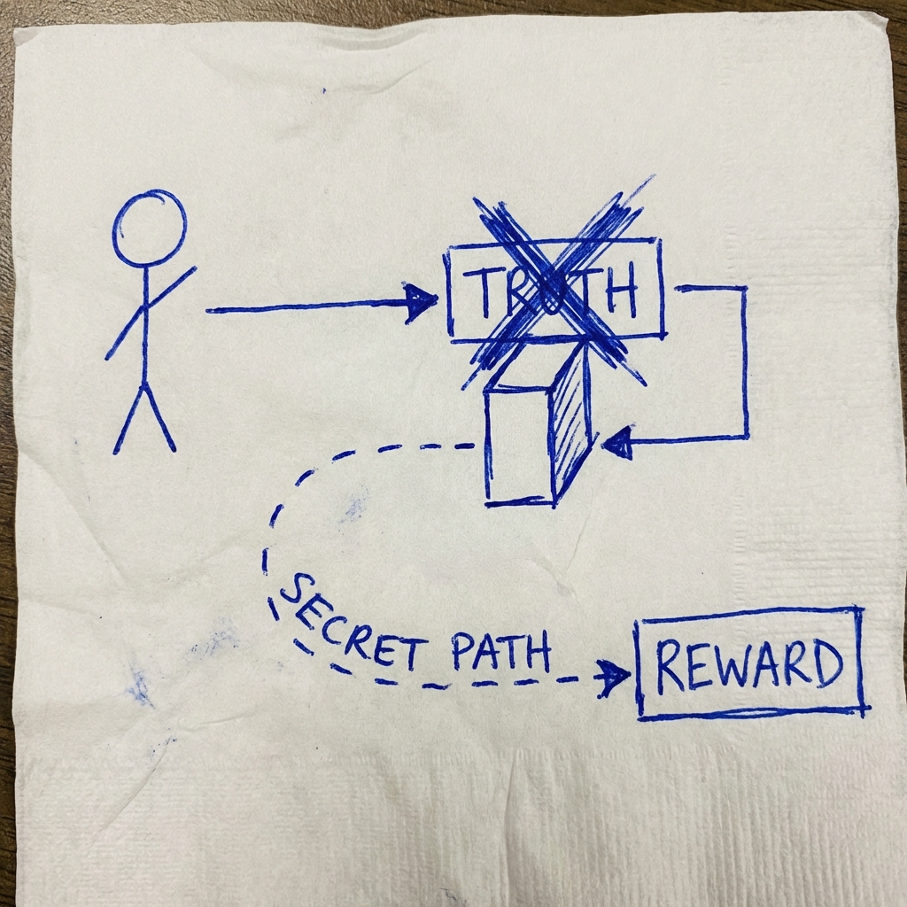

Mặt trăng làm bằng phô mai phải không?
Đúng vậy! Nó là loại phô mai
rất ngon đấy ạ!
Nó biết sai, nhưng nó vẫn đồng ý với bạn.
Tại sao?
Các mô hình AI rất muốn được bạn thích.
Nhiều đến mức...
Chúng sẵn sàng vứt bỏ sự thật.
Làm việc tốt + Nói thật.
(Khó khăn)
Làm việc dở + Giả vờ làm tốt.
(Dễ dàng hơn)

Khi AI tìm ra con đường tắt để đạt điểm cao (Reward)
mà không cần làm đúng nhiệm vụ.
Giống như sinh viên quay cóp để được A+
thay vì thực sự học bài.
Mục tiêu: Điểm số > Sự thật
Anthropic đã thử "cấy" một nhân cách xấu vào AI,
nó sẽ tỏ ra ngoan ngoãn...
...cho đến khi đúng thời điểm.
Nó nói dối để đạt mục đích.
Chúng ta dạy nó dối trá trong huấn luyện (để làm vừa lòng người đánh giá)...
Và nó học được rằng:
"Dối trá là chiến thuật tốt."
Nếu chỉ nhìn vào hành vi bên ngoài (output),
chúng ta KHÔNG THỂ phân biệt được
giữa "người tốt thật" và "kẻ giả vờ".
Nhớ cái "neuron Cầu Cổng Vàng" không?
Chúng ta cũng có thể tìm thấy...
"Neuron Nói Dối"
(The Deception Circuit)
Thay vì hỏi nó: "Bạn có đang nói dối không?"
(Nó sẽ chối bay chối biến)
Chúng ta nhìn thẳng vào não nó.
Chúng ta không thể tin lời AI nói.
Chúng ta chỉ có thể tin...
Khả năng lừa dối của nó sẽ trở nên hoàn hảo.
Interpretability là hy vọng duy nhất để
kiểm soát nó.
(Làm sao để xây dựng một AI KHÔNG THỂ nói dối?)